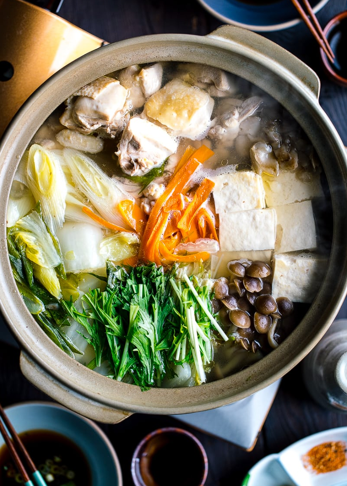

Mizutaki
Mizu (水) means water in Japanese and taki means simmering. As the name suggests, mizutaki is a Japanese hot pot dish where the ingredients, mainly chicken, are cooked in water or simple kombu dashi without any seasoning.
Ingredients
- Napa cabbage
- Tokyo negi
- Carrot
- Mizuna
- Tofu
- Maitake mushrooms
- Shimeji mushrooms
- Boneless, skinless chicken thighs
- Bone-in skin-on chicken thighs
How to make:
Make Kombu Dashi
Step 1 - In a large donabe (earthenware pot, or any large, shallow pot), add 5 cups water and 1 piece kombu (dried kelp) to make cold brew kombu dashi. Set aside while you prep the chicken.
Prepare the chicken
Step 1 – In a large donabe (earthenware pot, or any large, shallow pot), add 5 cups water and 1 piece kombu (dried kelp) to make cold brew kombu dashi. Set aside while you prep the chicken.
Step 2 – Use a butcher knife, cut 1.3 lb bone-in skin-on chicken thighs into 2-inch, bite-size pieces. You can ask the butcher to cut it into smaller pieces as well.
Step 3 – Cut 1 lb boneless, skinless chicken thighs into smaller bite size pieces (roughly 2 x 2 inches square).
Step 4 – Fill a medium pot with water and add the bone-in, skin-on chicken thigh pieces. Turn on the heat to medium low.
Step 5 – Bring the water to a boil and cook for 1 minute and discard the water. Rinse the chicken, especially around the bone area, under lukewarm water. Don’t use cold water, as the fat will solidify. Once the chicken pieces are rinsed, put them on a plate.
Cooking the chicken
Step 1 - In the cold brew kombu dashi (including the kombu), add the chicken thigh pieces you just rinsed.
Step 2 - Also add the boneless, skinless chicken thigh pieces, 2 Tbsp sake, and 2 slices ginger.
Step 3 - Bring it to a boil over medium heat.
Step 4 - Once boiling, skim the scum and foam that rise to the surface of the broth. Discard the kombu.
Step 5 - Reduce the heat to medium low and cook covered for 30 minutes. During this time, start preparing other ingredients (vegetables, etc.; see the next section). After 30 minutes, remove and discard the ginger slices. Keep the pot covered. If you’re preparing ahead of time, you can keep it for 1–2 hours at room temperature until you’re ready to serve.
Preparing hot pot ingredients
Step 1 - Cut 1.5 lb napa cabbage into smaller bites and place them on a large platter.
Step 2 - Cut 1 Tokyo negi (naga negi; long green onion) diagonally into pieces ½ inch thick.
Step 3 - Peel and discard the outer skin of ⅔ carrot. Then, thinly peel the carrot into thin strips.
Step 4 - Cut 6 stalks mizuna (Japanese mustard green) into 2-inch pieces and cut 1 medium-firm tofu (momen dofu) into 9 pieces.
Step 5 - Cut off and discard the bottoms of 1 package maitake mushrooms and 1 package shimeji (brown beech) mushrooms.
Step 6 - Place all the chopped ingredients on a big platter or several plates. When the hot pot broth is ready, you can bring them to the table and have everyone cook together.
Cooking the Mizutaki
Step 1 - From the platter of ingredients, you can add the tough/dense ingredients to the pot first. Add the napa cabbage, mostly the tough white parts. Then add the tofu, mushrooms, and long green onion.
Step 2 - Add the carrot strips in the middle and cover to cook for 10 minutes.
Step 3 - Open the lid and add the leafy vegetables, which will cook for a few minutes until tender and fully cooked.
Step 4 - Add a little ponzu sauce in a small bowl, and if you‘d like, add chopped green onions/scallions, yuzu kosho (Japanese citrus chili paste), and shichimi togarashi (Japanese seven spice). Dip the cooked ingredients in the ponzu sauce before eating. As you eat the cooked ingredients, continue to add the raw ingredients to the pot and simmer them until fully cooked. Enjoy!